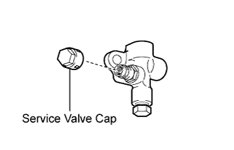
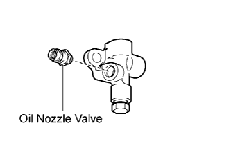
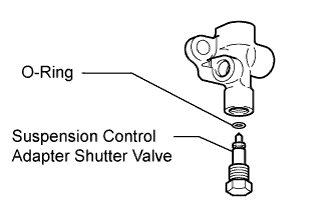

STABILIZER CONTROL VALVE (w/ KDSS) > DISASSEMBLY |
| 1. REMOVE SERVICE VALVE CAP (for Lower Chamber Side) |
 |
Remove the cap from the oil nozzle valve.
| 2. REMOVE SERVICE VALVE CAP (for Upper Chamber Side) |
| 3. REMOVE OIL NOZZLE VALVE SUB-ASSEMBLY (for Lower Chamber Side) |
 |
Remove the oil nozzle valve from the adapter housing.
| 4. REMOVE OIL NOZZLE VALVE SUB-ASSEMBLY (for Upper Chamber Side) |
| 5. REMOVE STABILIZER CONTROL ADAPTER SHUTTER VALVE (for Lower Chamber Side) |
 |
Remove the shutter valve and O-ring from the adapter housing.
| 6. REMOVE STABILIZER CONTROL ADAPTER SHUTTER VALVE (for Upper Chamber Side) |